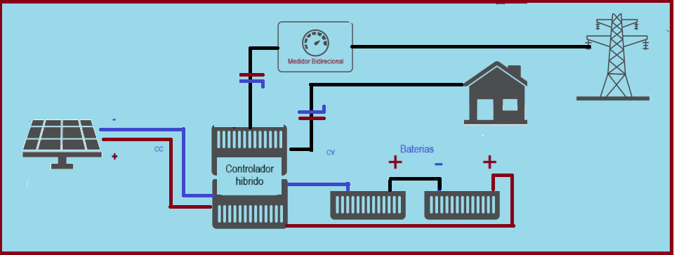

O sistema fotovoltaico híbrido combina as características dos sistemas on-grid e off-grid. Nesse tipo de sistema, o inversor trabalha conectado à rede elétrica da concessionária, mas também utiliza baterias para armazenamento de energia.
As baterias desempenham um papel fundamental nesse tipo de sistema, garantindo o fornecimento contínuo de energia às cargas, mesmo em caso de falta de energia na rede elétrica local. Essa funcionalidade proporciona uma segurança adicional ao consumidor.
Um exemplo prático desse benefício é uma sorveteria que enfrenta uma interrupção no fornecimento de energia da rede elétrica. Sem uma fonte de energia alternativa, como as baterias, os freezers podem parar de funcionar e os produtos podem se perder.
O sistema fotovoltaico híbrido oferece uma solução confiável para esse tipo de situação, garantindo a continuidade do fornecimento de energia, mesmo durante interrupções na rede elétrica.
